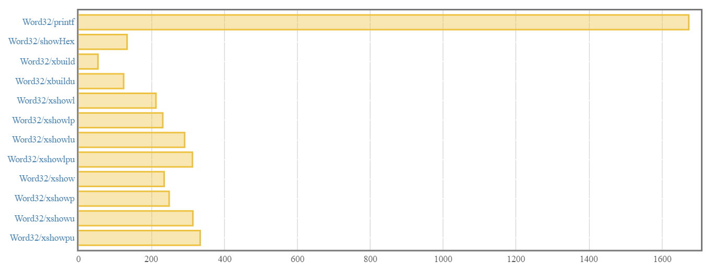
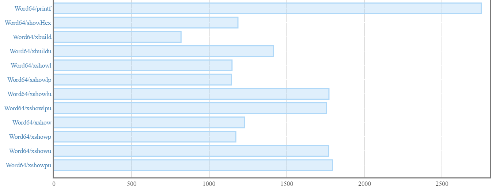
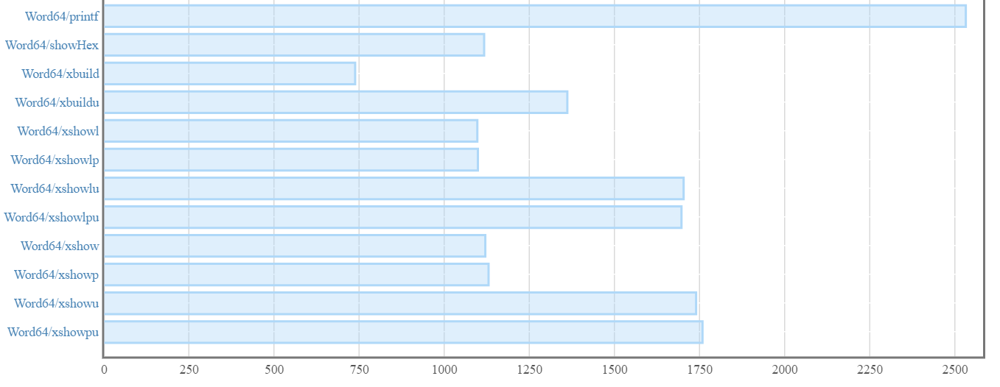

Jason Shipman
August 12, 2017

In the previous post, we applied GHC’s SPECIALIZE pragma for some nice performance gains. Our API looked like this:
class HexShow a where
xbuild :: a -> Builder
xbuildu :: a -> Builder
xshow :: HexShow a => a -> Text.Text
xshowp :: HexShow a => a -> Text.Text
xshowu :: HexShow a => a -> Text.Text
xshowpu :: HexShow a => a -> Text.Text
xshowl :: HexShow a => a -> Text.Lazy.Text
xshowlp :: HexShow a => a -> Text.Lazy.Text
xshowlu :: HexShow a => a -> Text.Lazy.Text
xshowlpu :: HexShow a => a -> Text.Lazy.TextAfter we went specialize-happy, the benchmark report’s summary looked like this:

We shaved off anywhere from about 100 to 160 nanoseconds for each of the functions in Hexy’s public API. In this post, we will revisit our usage of Builder and do a brief dive into strictness.
Builder BewilderedOur xbuildStorable and xbuilduStorable functions are doing something strange:
xbuildStorable v = zeroPaddedHex . buildHex Char.intToDigit $ v
where
zeroPaddedHex hex = go numPadCharsNeeded hex
where
go 0 b = b
go n b = go (n - 1) (Text.Lazy.Builder.singleton '0' <> b)
numPadCharsNeeded = lengthWithoutPrefix - hexLength
lengthWithoutPrefix = fromIntegral $ 2 * Storable.sizeOf v
-- Hmm...
hexLength = Text.Lazy.length . Text.Lazy.Builder.toLazyText $ hexWe are calculating the length of the Builder by converting it to a lazy Text and then getting the lazy Text value’s length. This was purely out of convenience as we cannot know a Builder value’s length from the Builder value alone. text-show has a lengthB helper function that does the same thing. Still, this is unnecessary and we can do better.
One way to solve for this is to add a new internal data type:
data LengthTrackingBuilder a = LengthTrackingBuilder a BuilderOur LengthTrackingBuilder is parameterized for all values of a. The new data type wraps an a and a Builder. Our a’s will be counters that we manually update anytime we add to the Builder. The a’s will wind up being the same type as the value we convert to hex.
We update our buildHex and buildWordAtBase functions to use the LengthTrackingBuilder instead of the vanilla Builder:
buildHex :: (Integral a, Show a) => (Int -> Char) -> a -> LengthTrackingBuilder a
-- a bunch of SPECIALIZE pragmas...
buildHex = buildWordAtBase 16
buildWordAtBase :: (Integral a, Show a) => a -> (Int -> Char) -> a -> LengthTrackingBuilder a
-- a bunch of SPECIALIZE pragmas...
buildWordAtBase base toChr n0
| base <= 1 = errorWithoutStackTrace ("Hexy.buildWordAtBase: applied to unsupported base " ++ show base)
| n0 < 0 = errorWithoutStackTrace ("Hexy.buildWordAtBase: applied to negative number " ++ show n0)
| otherwise = buildIt (quotRem n0 base) (LengthTrackingBuilder 1 mempty)
where
buildIt (n, d) (LengthTrackingBuilder l b) = seq c $ -- stricter than necessary
case n of
0 -> LengthTrackingBuilder l b'
_ -> buildIt (quotRem n base) (LengthTrackingBuilder (1 + l) b')
where
c = toChr $ fromIntegral d
b' = Text.Lazy.Builder.singleton c <> bbuildWordAtBase’s flow is exactly the same as before except now it does some extra bookkeeping to bump the counter in the LengthTrackingBuilder.
We will pull out zeroPaddedHex into a top-level function:
zeroPaddedHex :: (Integral a, Storable a) => LengthTrackingBuilder a -> Builder
-- a bunch of SPECIALIZE pragmas...
zeroPaddedHex (LengthTrackingBuilder len hex) = go numPadCharsNeeded hex
where
go 0 b = b
go n b = go (n - 1) (Text.Lazy.Builder.singleton '0' <> b)
numPadCharsNeeded = lengthWithoutPrefix - len
lengthWithoutPrefix = fromIntegral $ 2 * Storable.sizeOf lenzeroPaddedHex now takes a LengthTrackingBuilder a as input and returns a vanilla Builder. All we need the length for is calculating how many remaining '0' characters we need to pad the hex string. The length is not important to us after the string is padded.
Now xbuildStorable and xbuilduStorable are pretty concise. They make buildHex and zeroPaddedHex do all the work!
xbuildStorable :: (Integral a, Show a, Storable a) => a -> Builder
-- a bunch of SPECIALIZE pragmas...
xbuildStorable = zeroPaddedHex . buildHex Char.intToDigit
xbuilduStorable :: (Integral a, Show a, Storable a) => a -> Builder
-- a bunch of SPECIALIZE pragmas...
xbuilduStorable = zeroPaddedHex . buildHex (Char.toUpper . Char.intToDigit)Our public API has not changed so our unit tests do not need to be updated. Feel free to run them to make sure they still pass!
In the previous post, our benchmark results looked like this:
Let’s run the benchmarks again:
$ stack bench --benchmark-arguments "--output bench.html"View the full report from this run here. The summary looks like this:

Nice! Those are some serious performance gains and the code update was pretty minor. Every function is now faster by at least 100 nanoseconds, and a few of the functions are faster by close to 200 nanoseconds! Our functions are getting ever closer to the performance of showHex and they are doing more work via zero padding.
Haskell is a non-strict language. We touched on this a bit in the first post when we talked about normal form and weak head normal form. This section of Simon Marlow’s Parallel and Concurrent Programming in Haskell is a great reference on how laziness works in GHC. Computations like let y = 3 - 2 are not evaluated until they are actually needed somewhere. y points to a “thunk” created for the (-) function. As Simon Marlow defines it, a thunk is an “object in memory representing an unevaluted computation”. The thunk has pointers to each of its arguments. If no parts of our code ever demand the value of y, the thunk will remain unevaluated.
This means we can write code like this (though just because we can does not mean we should!):
printThatInt :: Int -> IO ()
printThatInt _ = putStrLn "No int for you!"
main :: IO ()
main = do
printThatInt 42
printThatInt undefined
printThatInt (error "I'ma crash yer program...")If we run the main function, the program does not crash or throw an exception. main outputs:
No int for you!
No int for you!
No int for you!We used _ in printThatInt to ignore the argument. Turns out we are not just ignoring the argument - we are flat out not evaluating the argument!
What if we instead wrote printThatInt like this?
printThatInt :: Int -> IO ()
printThatInt 3 = putStrLn "What a nice number! Sorry, but I keep it!"
printThatInt _ = putStrLn "No int for you!"Running main would output:
No int for you!
*** Exception: Prelude.undefinedBy adding a pattern match for the value 3, we have made printThatInt strict in its argument. The Int value coming into the function must be fully evaluated to see if it is 3 or not. When we pass in undefined or error "I'ma crash yer program...", they are evaluated and spell certain death for our program.
Laziness can hurt performance - particularly when accumulators are involved. Here is the definition of buildWordAtBase again:
buildWordAtBase :: (Integral a, Show a) => a -> (Int -> Char) -> a -> LengthTrackingBuilder a
-- a bunch of SPECIALIZE pragmas...
buildWordAtBase base toChr n0
| base <= 1 = errorWithoutStackTrace ("Hexy.buildWordAtBase: applied to unsupported base " ++ show base)
| n0 < 0 = errorWithoutStackTrace ("Hexy.buildWordAtBase: applied to negative number " ++ show n0)
| otherwise = buildIt (quotRem n0 base) (LengthTrackingBuilder 1 mempty)
where
buildIt (n, d) (LengthTrackingBuilder l b) = seq c $ -- stricter than necessary
case n of
0 -> LengthTrackingBuilder l b'
_ -> buildIt (quotRem n base) (LengthTrackingBuilder (1 + l) b') -- here there be thunks!
where
c = toChr $ fromIntegral d
b' = Text.Lazy.Builder.singleton c <> bThe line we care about:
_ -> buildIt (quotRem n base) (LengthTrackingBuilder (1 + l) b') -- here there be thunks!This is the recursive call to buildIt. The second parameter we pass to buildIt is a new LengthTrackingBuilder with the updated length and Builder value.
It turns out we can do slightly better. The length update - the (1 + l) bit - creates a thunk for the (+) computation on every subsequent invocation of buildIt. What we are actually passing to buildIt is more like LengthTrackingBuilder <addition_thunk> b. Our code does not evaluate all the additions until zeroPaddedHex demands the length value so it can get to work. Don’t worry about a similar thunk representation for the Builder value - we are only concerned with accumulators here.
The new LengthTrackingBuilder data type we introduced could instead be defined like this:
data LengthTrackingBuilder a = LengthTrackingBuilder !a BuilderThis is a single character change to the definition we introduced previously. We added an exclamation mark in front of the counter type in the data constructor. This exclamation mark is called a strictness annotation. We can use strictness annotations on fields to indicate those fields must be fully evaluated when a value of our data type is constructed.
This should give us a minor performance improvement, but we will not be able to tell a difference with our current benchmarks. Our benchmark suite looks like this:
main :: IO ()
main = defaultMain
[ bgroup "Word32"
[ bench "printf" $ nf (printf "%08x" :: Word32 -> String) 0x1f
, bench "showHex" $ nf (showHex (0x1f :: Word32)) ""
, bench "xbuild" $ whnf xbuild (0x1f :: Word32)
, bench "xbuildu" $ whnf xbuildu (0x1f :: Word32)
, bench "xshowl" $ nf xshowl (0x1f :: Word32)
, bench "xshowlp" $ nf xshowlp (0x1f :: Word32)
, bench "xshowlu" $ nf xshowlu (0x1f :: Word32)
, bench "xshowlpu" $ nf xshowlpu (0x1f :: Word32)
, bench "xshow" $ nf xshow (0x1f :: Word32)
, bench "xshowp" $ nf xshowp (0x1f :: Word32)
, bench "xshowu" $ nf xshowu (0x1f :: Word32)
, bench "xshowpu" $ nf xshowpu (0x1f :: Word32)
]
]If we think about this, the length accumulator in buildWordAtBase is only going to involve a couple thunks since the resulting hex string will have length 2 not counting the zero padding. Evaluating a couple thunks in this case is very cheap. We would not notice much of a difference (if at all) with and without the strictness annotation. Feel free to try it and see for yourself!
We will add a Word64 group to our benchmark suite:
main :: IO ()
main = defaultMain
[ bgroup "Word32"
[ bench "printf" $ nf (printf "%08x" :: Word32 -> String) 0x1f
, bench "showHex" $ nf (showHex (0x1f :: Word32)) ""
, bench "xbuild" $ whnf xbuild (0x1f :: Word32)
, bench "xbuildu" $ whnf xbuildu (0x1f :: Word32)
, bench "xshowl" $ nf xshowl (0x1f :: Word32)
, bench "xshowlp" $ nf xshowlp (0x1f :: Word32)
, bench "xshowlu" $ nf xshowlu (0x1f :: Word32)
, bench "xshowlpu" $ nf xshowlpu (0x1f :: Word32)
, bench "xshow" $ nf xshow (0x1f :: Word32)
, bench "xshowp" $ nf xshowp (0x1f :: Word32)
, bench "xshowu" $ nf xshowu (0x1f :: Word32)
, bench "xshowpu" $ nf xshowpu (0x1f :: Word32)
]
, bgroup "Word64"
[ bench "printf" $ nf (printf "%08x" :: Word64 -> String) 0x1234567812345678
, bench "showHex" $ nf (showHex (0x1234567812345678 :: Word64)) ""
, bench "xbuild" $ whnf xbuild (0x1234567812345678 :: Word64)
, bench "xbuildu" $ whnf xbuildu (0x1234567812345678 :: Word64)
, bench "xshowl" $ nf xshowl (0x1234567812345678 :: Word64)
, bench "xshowlp" $ nf xshowlp (0x1234567812345678 :: Word64)
, bench "xshowlu" $ nf xshowlu (0x1234567812345678 :: Word64)
, bench "xshowlpu" $ nf xshowlpu (0x1234567812345678 :: Word64)
, bench "xshow" $ nf xshow (0x1234567812345678 :: Word64)
, bench "xshowp" $ nf xshowp (0x1234567812345678 :: Word64)
, bench "xshowu" $ nf xshowu (0x1234567812345678 :: Word64)
, bench "xshowpu" $ nf xshowpu (0x1234567812345678 :: Word64)
]
]Passing in a value like 0x1234567812345678 means all the work will be in buildWordAtBase instead of zeroPadHex, which results in more accumulator thunks.
We will run our benchmarks first without the strictness annotation.
View the full report from the run without the strictness annotation here. The summary looks like this:

View the full report from the run with the strictness annotation here. The summary looks like this:

Woo! All of our functions are around 30-60 nanoseconds faster for the new Word64 group and all we did was add a single exclamation mark!
Johan Tibell encourages marking all constructor fields as strict unless we have a specific reason to make them lazy. I feel this is excellent advice!
BangPatternsGHC provides a language extension called BangPatterns and it can be enabled like this:
{-# LANGUAGE BangPatterns #-}This extension lets you add strictness annotations on function arguments similarly to how we added one to the counter field in the LengthTrackingBuilder data constructor. Knowing this, we will turn our attention to the go function within zeroPadHex:
zeroPaddedHex (LengthTrackingBuilder len hex) = go numPadCharsNeeded hex
where
go 0 b = b
go n b = go (n - 1) (Text.Lazy.Builder.singleton '0' <> b)
numPadCharsNeeded = lengthWithoutPrefix - len
lengthWithoutPrefix = fromIntegral $ 2 * Storable.sizeOf lenHaskellers bitten with “strictness paranoia” may think a function like go should look like this to be strict in its first argument:
{-# LANGUAGE BangPatterns #-}
-- ...
go 0 b = b
go !n b = go (n - 1) (Text.Lazy.Builder.singleton '0' <> b)We added a bang pattern (i.e. strictness annotation) to n to say “n should be fully evaluated”. The way our function is written, this bang pattern is redundant. go has a similar structure to the second version of the printThatInt function we introduced earlier. The pattern match check for a value of 0 means the function is already strict in its first argument. The bang pattern in this case will not give us any better performance!
I am specifically mentioning the example above because I am no stranger to “strictness paranoia”. I have dished out plenty of unnecessary bang patterns!
For a quick example of where the BangPatterns extension can be useful, have a look at this section of Johan Tibell’s Haskell style guide. Oliver Charles has a great blog post about BangPatterns here too.
We will revert the changes made to our benchmark suite to bring it back to just the Word32 benchmark group as this will simplify our analysis in the next post. The full report with the strictness annotation and only the Word32 benchmark group is available here. The summary looks like this:

In the next post, we will dive into the internals of the text package. From the work we did in this post to track Builder length, we might be starting to wonder if Builder was the best choice for our use case…
All code in this post is available on GitHub.